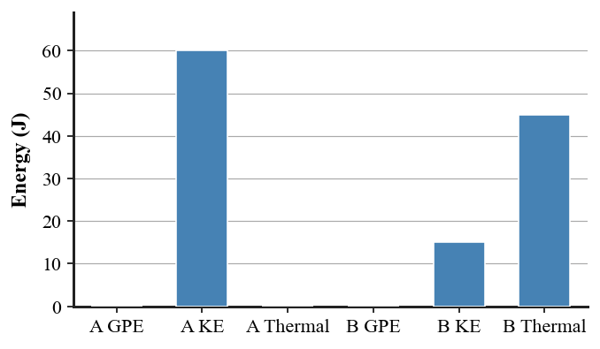
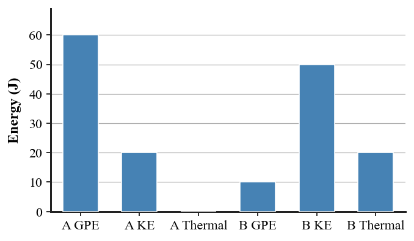
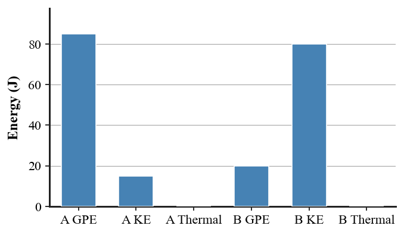

Unit 4 Summative Assessment
Version 1
Directions: Answer questions 1–16 on the answer sheet. Complete questions 17–20 on the back of the answer sheet. Show formula work and reasoning for free response. Test copies do not provide workspaces.
1. [DOK 1] A moving soccer ball has a quantity that depends on both its mass and velocity. What is this quantity?
A. force
B. momentum
C. power
D. work
E. impulse
2. [DOK 1] Which statement best describes impulse?
A. Mass multiplied by velocity
B. Force applied through a distance
C. Force acting over a time interval
D. Energy stored because of height
E. The rate of doing work
3. [DOK 1] Which situation shows work being done by the named force in the physics sense?
A. Holding a box motionless
B. Pushing on a wall that does not move
C. Carrying a backpack horizontally while the support force is upward
D. Lifting a book upward onto a shelf
E. Standing still while holding a weight
4. [DOK 1] A book rests on a shelf above the floor. Which energy form is associated with its height?
A. gravitational potential energy
B. kinetic energy
C. thermal energy
D. impulse
E. power
5. [DOK 1] Hydrogen in a tank was produced using electrical energy. In this description, hydrogen is best classified as:
A. a perpetual-motion source
B. a force
C. a work calculation
D. a thermal loss only
E. an energy carrier
6. [DOK 2] Cart A is 2 kg at 6 m/s, Cart B is 4 kg at 2 m/s, Cart C is 1 kg at 10 m/s, and Cart D is 3 kg at 3 m/s. Which cart has the greatest momentum magnitude?
A. Cart A
B. Cart B
C. Cart C
D. Cart D
E. B and D tie
7. [DOK 2] A bumper provides a 24 N·s stopping impulse over 0.24 s. What is the average stopping-force magnitude?
A. 5.8 N
B. 24 N
C. 240 N
D. 100 N
E. 576 N
8. [DOK 2] Before a collision, a 1 kg cart moves at +6 m/s and a 2 kg cart is at rest. Afterward the 1 kg cart stops and the 2 kg cart moves at +3 m/s. Which conclusion is supported?
A. Momentum is not conserved because one cart stopped.
B. The after momentum is 3 kg·m/s.
C. The model is consistent: total momentum is +6 kg·m/s before and after.
D. The system gained 6 kg·m/s of momentum.
E. There is not enough information to compare momentum.
9. [DOK 2] Use the energy bars for State A and State B. Which description best matches the evidence?

A. GPE and KE both increase while total energy doubles.
B. GPE decreases as KE increases, while total energy remains 100 J.
C. Thermal energy increases to 80 J.
D. KE decreases by 60 J and the energy disappears.
E. The chart shows momentum conservation, not energy conservation.
10. [DOK 2] A worker pushes a crate with a 150 N force through 3.0 m in the direction of the force. How much work is done?
A. 50 J
B. 153 J
C. 300 J
D. 450 J
E. 1350 J
11. [DOK 2] A 4 kg cart moves at 5 m/s. What is its kinetic energy?
A. 10 J
B. 20 J
C. 50 J
D. 100 J
E. 200 J
12. [DOK 3] A passenger has the same initial and final momentum whether or not an airbag is used. Why can the airbag reduce injury risk?
A. It makes the momentum change zero.
B. It increases stopping time, reducing average force for the same impulse.
C. It removes the need for a stopping force.
D. It increases the passenger’s kinetic energy.
E. It makes impulse smaller than the momentum change.
13. [DOK 3] In a two-cart collision, why can total momentum of the two-cart system remain constant even though Cart A’s momentum changes?
A. Cart A has no force on it.
B. Only kinetic energy can change.
C. The carts exert internal forces on each other; total system momentum can remain constant when external impulse is negligible.
D. Momentum is conserved for every individual object.
E. The heavier cart always keeps its momentum.
14. [DOK 3] A sliding box comes to rest because of friction. Which statement best corrects the claim “its energy is gone”?
A. Energy conservation stops when motion stops.
B. The box has zero total energy after stopping.
C. Kinetic energy must remain kinetic energy.
D. The kinetic energy is transferred mainly into thermal energy in the box and surroundings.
E. Momentum and energy are the same quantity.
15. [DOK 3] A student says, “Solar panels create electrical energy from nothing.” Which revision is best?
A. Solar panels create energy only on sunny days.
B. Solar panels transform incoming radiant energy into electrical energy, with some energy transferred to the surroundings.
C. Solar panels convert momentum into electricity.
D. Solar panels are energy carriers but receive no source energy.
E. Solar panels violate energy conservation slightly.
16. [DOK 4] Two helmet liners are tested with the same headform and impact speed. Liner R stops the headform in 0.020 s with an average force of 6000 N. Liner F stops it in 0.080 s with an average force of 1500 N and deforms noticeably. Which evaluation best uses both impulse and energy evidence?
A. R is safer because the force is larger.
B. R is safer because shorter time always means less energy transfer.
C. F is better supported: the longer stop lowers average force for the same momentum change, and deformation provides a pathway for energy transfer.
D. F must reduce the momentum change to zero.
E. The tests cannot be compared because both liners exert forces.
Free Response — Questions 17–20
Show work for full credit. Clearly identify final answer(s). Use units and physics vocabulary when appropriate.
17. A 4 kg cart moves at 5 m/s and is brought to rest in 0.25 s. Determine the magnitude of the average stopping force. Show momentum and impulse as intermediate steps.
18. A 5 kg backpack is lifted 2.0 m in 4.0 s. Use $g=10\,\text{m/s}^2$. Determine the average power needed to increase its gravitational potential energy. Show the energy change as an intermediate step.
19. A 2 kg cart moves at +4 m/s toward a 1 kg cart moving at −2 m/s. They stick together. Determine their shared velocity if external impulse is negligible, and state the system assumption that makes momentum conservation appropriate.
20. A roller coaster descends and speeds up. Explain the energy transformation if friction is negligible, then explain what changes in the energy account when friction is included. Do not say energy “disappears.”
Unit 4 Summative Assessment
Version 2
Directions: Answer questions 1–16 on the answer sheet. Complete questions 17–20 on the back of the answer sheet. Show formula work and reasoning for free response. Test copies do not provide workspaces.
1. [DOK 1] Which term names the product of mass and velocity?
A. work
B. power
C. impulse
D. momentum
E. contact time
2. [DOK 1] The duration of a collision or force interaction is called:
A. momentum
B. contact time
C. work
D. mechanical energy
E. power
3. [DOK 1] A person carries a backpack horizontally at constant height. The support force on the backpack is upward while displacement is horizontal. What work does the support force do?
A. No work
B. Positive work
C. Negative work
D. Work equal to the backpack’s momentum
E. Work equal to its kinetic energy
4. [DOK 1] A compressed spring stores primarily which kind of energy?
A. thermal energy
B. kinetic energy
C. elastic potential energy
D. momentum
E. power
5. [DOK 1] In a fuel cell, chemical energy in hydrogen becomes electrical energy. This is best classified as:
A. an energy source only
B. an energy carrier only
C. contact time
D. a collision
E. an energy transformation
6. [DOK 2] A 120 kg delivery cart moves at 3 m/s, an 80 kg cyclist+bike moves at 5 m/s, and a 250 kg utility vehicle moves at 2 m/s. Which momentum ranking is correct?
A. cyclist > cart > utility
B. utility > cyclist > cart
C. cart > utility > cyclist
D. utility > cart > cyclist
E. all are equal
7. [DOK 2] An airbag increases stopping time from 0.04 s to 0.20 s for the same momentum change. If the average force without the airbag is 5000 N, what is the average force with the airbag?
A. 1000 N
B. 2500 N
C. 5000 N
D. 10000 N
E. 25000 N
8. [DOK 2] Before a collision, a 2 kg cart moves at +4 m/s and a 1 kg cart is at rest. Afterward the 2 kg cart moves at +1 m/s. If momentum is conserved, what must be the 1 kg cart’s velocity?
A. +2 m/s
B. +3 m/s
C. +4 m/s
D. +6 m/s
E. +8 m/s
9. [DOK 2] The energy bars show a pendulum at two states. What happens from A to B?

A. Both GPE and KE decrease and 40 J disappears.
B. Thermal energy becomes the largest form.
C. GPE decreases while KE increases; the 80 J total remains constant.
D. Total energy rises from 80 J to 160 J.
E. The chart shows a change in momentum only.
10. [DOK 2] A machine transfers 600 J of energy by work in 5.0 s. What is its power?
A. 30 W
B. 120 W
C. 300 W
D. 600 W
E. 3000 W
11. [DOK 2] A 3 kg backpack is lifted 4 m. Use $g=10\,\text{m/s}^2$. How much gravitational potential energy is gained?
A. 12 J
B. 30 J
C. 40 J
D. 120 J
E. 300 J
12. [DOK 3] A gymnast lands with the same change in momentum on a hard floor and on a soft mat. Why does the soft mat usually reduce average force?
A. It increases the gymnast’s momentum.
B. It makes impulse zero.
C. It increases the stopping time over which the impulse acts.
D. It creates energy that cancels the collision.
E. It makes the gymnast’s mass smaller.
13. [DOK 3] A small car and a large truck exert equal-size opposite forces on each other during a collision. Which statement best explains why their motion changes can still be different?
A. The truck receives no impulse.
B. Their impulses are equal and opposite, but the same-size momentum changes can produce different velocity changes because the masses differ.
C. Only the car changes momentum.
D. The larger vehicle always feels the larger force.
E. Momentum cannot be analyzed during a collision.
14. [DOK 3] A student becomes tired while holding a heavy box motionless and says, “I am doing lots of physics work on the box.” Which response is best?
A. Correct, because tiredness measures work.
B. Correct, because force alone guarantees work.
C. Incorrect, because the box has potential energy.
D. Incorrect, because work can only occur in collisions.
E. Incorrect: the force on the box has no displacement in its direction, so that force does no mechanical work on the box.
15. [DOK 3] Why is it incomplete to call hydrogen in a tank an “original energy source” without more information?
A. Hydrogen is commonly an energy carrier; energy must be supplied to produce it, so the upstream source matters.
B. Hydrogen contains no energy.
C. Hydrogen is a force, not an energy idea.
D. Hydrogen can only be made from sunlight.
E. Hydrogen always violates conservation of energy.
16. [DOK 4] Two proposed collision models use the system “both carts.” Model P gives total momentum −4 kg·m/s before and −4 kg·m/s after. Model Q gives −4 kg·m/s before and −2 kg·m/s after. The track is described as low friction. Which conclusion is strongest?
A. Model Q proves momentum is never conserved.
B. Model P proves there were absolutely no external forces.
C. Both models are equally supported because the carts collide.
D. Model P better supports an approximately isolated-system model; Model Q would require external impulse, measurement error, or an incomplete account.
E. Model Q is better because after momentum should be closer to zero.
Free Response — Questions 17–20
Show work for full credit. Clearly identify final answer(s). Use units and physics vocabulary when appropriate.
17. A 0.15 kg baseball changes velocity from +30 m/s to −10 m/s in 0.020 s. Determine the average force on the ball. Take the original direction as positive and show the momentum change.
18. A 20 N force moves a crate 6 m in the force direction in 3.0 s. Determine the average power. Show the work as an intermediate step.
19. Before a collision, a 3 kg cart moves at +2 m/s and a 1 kg cart is at rest. Afterward the 3 kg cart moves at +1 m/s. Determine the 1 kg cart’s velocity if momentum is conserved. Explain why the two carts should be treated as the system.
20. A flashlight model shows only “battery chemical energy → light.” Critique and improve the model by including the energy carrier/transformation pathway and at least one less-useful transfer.
Unit 4 Summative Assessment
Version 3
Directions: Answer questions 1–16 on the answer sheet. Complete questions 17–20 on the back of the answer sheet. Show formula work and reasoning for free response. Test copies do not provide workspaces.
1. [DOK 1] A bat acts on a baseball for a short time and changes the ball’s momentum. What interaction quantity is emphasized?
A. impulse
B. power
C. gravitational potential energy
D. mechanical energy
E. efficiency
2. [DOK 1] A push or pull that can change an object’s motion is called:
A. momentum
B. work
C. energy carrier
D. contact time
E. force
3. [DOK 1] A student pushes hard on a wall, but the wall does not move. What work does the student’s force do on the wall?
A. Large positive work
B. No work
C. Negative work
D. Work equal to the force
E. Work equal to the student’s energy use
4. [DOK 1] Which object has kinetic energy?
A. A book on a high shelf
B. A compressed spring at rest
C. A warm brake pad
D. A cart rolling across the floor
E. Gasoline in a tank
5. [DOK 1] Sunlight entering a solar-energy system is best described as:
A. an energy carrier
B. contact time
C. an energy source
D. a collision
E. a less-useful transfer
6. [DOK 2] Which has the greatest momentum magnitude: a 120 kg cart at 3 m/s, an 80 kg cyclist+bike at 5 m/s, or a 250 kg utility vehicle at 2 m/s?
A. the delivery cart
B. the cyclist+bike
C. the cart and cyclist tie
D. all three tie
E. the utility vehicle
7. [DOK 2] Two stops deliver the same 24 N·s impulse. Stop A lasts 0.08 s and Stop B lasts 0.24 s. Which statement is correct?
A. A averages 300 N, B averages 100 N, so B has the smaller force.
B. A averages 100 N, B averages 300 N.
C. Both average 24 N.
D. Both average 300 N.
E. Contact time does not affect average force for fixed impulse.
8. [DOK 2] A 2 kg cart moving at +5 m/s sticks to a 3 kg cart at rest. If external impulse is negligible, what is their shared speed after the collision?
A. 0.5 m/s
B. 1.0 m/s
C. 2.0 m/s
D. 3.0 m/s
E. 5.0 m/s
9. [DOK 2] A sliding object slows between State A and State B. What does the energy chart show?

A. Mechanical energy rises by 45 J.
B. 45 J of mechanical energy is transferred to thermal energy, while total energy stays 60 J.
C. 60 J of energy disappears.
D. Thermal energy decreases from 45 J to zero.
E. Potential energy becomes 60 J.
10. [DOK 2] A horizontal force of 80 N moves a crate 2.5 m in the force direction. How much work is done?
A. 32 J
B. 82.5 J
C. 160 J
D. 200 J
E. 320 J
11. [DOK 2] A 2 kg object moves at 8 m/s. What is its kinetic energy?
A. 16 J
B. 32 J
C. 64 J
D. 128 J
E. 256 J
12. [DOK 3] Why do controlled crumple zones help protect occupants in a crash?
A. They remove all momentum before the collision.
B. They increase stopping time and provide deformation pathways that transfer energy, reducing peak/average forces.
C. They make the vehicle mass zero.
D. They prevent any energy transformation.
E. They make impulse smaller than the required momentum change.
13. [DOK 3] After a road collision, two cars eventually stop. A student says, “Their momentum was destroyed.” Which response is best?
A. Correct; momentum disappears whenever speed becomes zero.
B. Correct; only kinetic energy can transfer to Earth.
C. Incorrect; momentum must stay in each car forever.
D. Incorrect; for the two-car system, external impulses from the road/Earth can transfer momentum, while a larger system can still conserve total momentum.
E. Incorrect only if the cars bounce.
14. [DOK 3] A car’s speed doubles while its mass stays constant. If the same braking force later stops it, why is “twice the stopping work” an incorrect prediction?
A. Kinetic energy becomes four times as large, so the required stopping work magnitude is four times as large.
B. Momentum becomes four times as large.
C. Kinetic energy doubles, so work doubles.
D. Braking force does no work.
E. The car has no energy once moving.
15. [DOK 3] A student ranks energy sources using only “how much energy they can produce.” What makes this comparison incomplete?
A. Energy sources cannot be compared.
B. Only color and size matter.
C. A useful comparison also considers evidence such as availability, efficiency, environmental impact, and reliability.
D. The highest-output source is always best by definition.
E. Conservation of energy requires all sources to be identical.
16. [DOK 4] During regenerative braking, a car loses 100 kJ of kinetic energy. Measurements show 65 kJ stored in the battery and about 35 kJ transferred as thermal energy to components and surroundings. Which audit is best?
A. The system creates 35 kJ.
B. The battery receives all 100 kJ, so the thermal reading is impossible.
C. The car violates momentum conservation.
D. Energy is not conserved because the car slows.
E. The 100 kJ decrease is accounted for; about 65% is usefully recovered while the rest is transferred thermally.
Free Response — Questions 17–20
Show work for full credit. Clearly identify final answer(s). Use units and physics vocabulary when appropriate.
17. A 0.50 kg ball moving at 20 m/s is stopped in 0.10 s. Determine the magnitude of the average stopping force. Show momentum/impulse as an intermediate step.
18. A 2 kg cart moving at 6 m/s is brought to rest. Determine the magnitude of the net work required to stop it by first finding its kinetic energy.
19. A collision record for “both carts” shows +12 kg·m/s before and +9 kg·m/s after. The track is described as low friction. Evaluate the record: is it fully consistent with an isolated-system model, and what are two plausible reasons for the mismatch?
20. During regenerative braking, a car loses 120 kJ of kinetic energy. Measurements show 80 kJ stored in the battery and 40 kJ transferred as thermal energy. Audit the energy account and explain why regenerative braking does not violate conservation of energy.
Unit 4 Summative Assessment
Version 4
Directions: Answer questions 1–16 on the answer sheet. Complete questions 17–20 on the back of the answer sheet. Show formula work and reasoning for free response. Test copies do not provide workspaces.
1. [DOK 1] Which term means the duration of a collision or force interaction?
A. power
B. momentum
C. contact time
D. work
E. kinetic energy
2. [DOK 1] Which quantity is a push or pull?
A. force
B. momentum
C. impulse
D. power
E. energy carrier
3. [DOK 1] A force points right and an object moves right while the force acts. How should the work by that force be classified?
A. No work
B. Work is done
C. Only impulse occurs, never work
D. Work is impossible without a collision
E. The answer depends only on mass
4. [DOK 1] Warm brake pads after a stop contain increased:
A. elastic potential energy
B. momentum
C. power
D. gravitational potential energy
E. thermal energy
5. [DOK 1] Electricity moving through a wire from a generator to a motor is best described as:
A. an original energy source
B. perpetual motion
C. contact time
D. an energy carrier
E. a collision
6. [DOK 2] Take right as positive. A: 3 kg at +4 m/s; B: 2 kg at −7 m/s; C: 5 kg at +2 m/s; D: 1 kg at −11 m/s. Which has the greatest momentum magnitude?
A. A
B. C
C. B
D. D
E. A and D tie
7. [DOK 2] Two designs must provide the same 18 N·s stopping impulse. Design X limits average force to 90 N; Design Y limits it to 45 N. Which statement is correct?
A. X requires 0.40 s and Y 0.20 s.
B. X requires 0.20 s and Y 0.40 s, so Y lengthens the stop more.
C. Both require 0.20 s.
D. Both require 0.40 s.
E. The stopping time cannot be determined.
8. [DOK 2] Before a collision, Cart A has +10 kg·m/s and Cart B has −4 kg·m/s. After, A has +2 kg·m/s and B has +4 kg·m/s. Is total momentum consistent?
A. No; +14 before and +6 after.
B. No; +6 before and −2 after.
C. Yes; +14 kg·m/s before and after.
D. Yes; +6 kg·m/s before and after.
E. There is no signed momentum in collisions.
9. [DOK 2] The State B chart includes a 25 J thermal-energy bar. What is the best interpretation?

A. Some mechanical energy has transferred to thermal energy, while the 100 J total remains conserved.
B. The 25 J thermal bar proves energy was created.
C. Thermal energy must be zero whenever a coaster moves.
D. The total falls from 100 J to 75 J.
E. The chart can only be used to analyze momentum.
10. [DOK 2] A machine does 900 J of work in 15 s. What is its power?
A. 15 W
B. 30 W
C. 60 W
D. 135 W
E. 13,500 W
11. [DOK 2] A 6 kg object is raised 5 m. Use $g=10\,\text{m/s}^2$. What is the increase in gravitational potential energy?
A. 30 J
B. 60 J
C. 120 J
D. 150 J
E. 300 J
12. [DOK 3] Why does a catcher often move the glove backward while catching a fast ball?
A. To make the momentum change larger than required.
B. To eliminate impulse.
C. To increase the ball’s mass.
D. To lengthen the stopping interval so the same momentum change occurs with a smaller average force.
E. To prevent any energy transfer.
13. [DOK 3] For the system “Cart A only,” Cart B pushes on A during a collision. How should that force be treated when analyzing Cart A’s momentum?
A. It is internal, so A’s momentum must be constant.
B. It is external to the one-cart system, so A’s momentum can change.
C. It is not a force because the carts are moving.
D. It is external only if A is heavier.
E. It has no impulse.
14. [DOK 3] A machine uses a longer distance to lift a load with less force. Which statement best applies energy conservation?
A. The machine creates energy because the force is smaller.
B. The machine eliminates the need for work.
C. The force-distance tradeoff can reduce required force without creating extra energy; ideal work output cannot exceed work input.
D. Power and energy are identical.
E. A machine can multiply both force and energy without limit.
15. [DOK 3] A wind farm charges batteries and the charger becomes warm. Which description is most complete?
A. Wind is only a carrier and warmth is a source.
B. Electricity is the original source and wind is the loss.
C. The battery creates chemical energy from nothing.
D. Warmth proves energy is not conserved.
E. Moving air is a source input, electricity acts as a carrier, electrical energy becomes chemical storage, and some energy transfers thermally to surroundings.
16. [DOK 4] A flywheel device reports 500 J electrical input and 650 J electrical output every cycle while its stored flywheel energy is unchanged. Which response is strongest?
A. At least 150 J per cycle is unaccounted for; sustained operation would conflict with conservation unless measurement error or a hidden input/storage source explains it.
B. The device is 130% efficient, so it must work forever.
C. The extra 150 J comes from momentum.
D. Energy conservation applies only to thermal systems.
E. The claim is proven by the output meter alone.
Free Response — Questions 17–20
Show work for full credit. Clearly identify final answer(s). Use units and physics vocabulary when appropriate.
17. A 6 kg cart moves at 4 m/s and is stopped by an average 120 N force. Determine the required stopping time. Show momentum and impulse as intermediate steps.
18. An 8 kg object is lifted 1.5 m in 3.0 s. Use $g=10\,\text{m/s}^2$. Determine the average power. Show the gravitational potential-energy change first.
19. Before a collision, Cart A has +10 kg·m/s and Cart B has −4 kg·m/s. Afterward Cart A has +2 kg·m/s. Determine Cart B’s after momentum if the two-cart system is isolated, and explain the conservation step.
20. A device claims 500 J electrical input and 650 J electrical output every cycle while stored mechanical energy stays unchanged. Critique the claim and describe at least two measurements or checks needed before accepting it.
Unit 4 Summative Assessment
Version 5
Directions: Answer questions 1–16 on the answer sheet. Complete questions 17–20 on the back of the answer sheet. Show formula work and reasoning for free response. Test copies do not provide workspaces.
1. [DOK 1] A moving object possesses a quantity described by $p=mv$. Which term belongs in the blank?
A. impulse
B. work
C. momentum
D. power
E. contact time
2. [DOK 1] A collision lasts 0.18 s. Which vocabulary term names this measured interval?
A. force
B. energy carrier
C. work
D. momentum
E. contact time
3. [DOK 1] A backpack moves horizontally while an upward support force acts on it. Which classification applies to the work done by that support force?
A. positive work
B. negative work
C. maximum work
D. no work
E. power
4. [DOK 1] Gasoline before burning stores primarily which kind of energy?
A. chemical energy
B. kinetic energy
C. gravitational potential energy
D. thermal energy only
E. mechanical energy only
5. [DOK 1] Moving air that turns the blades of a wind turbine is best treated as:
A. a contact time
B. an energy source input
C. a collision
D. a force-distance calculation
E. an energy loss only
6. [DOK 2] Carts 1–4 have (mass, speed): 1=(6 kg,2 m/s), 2=(3 kg,4 m/s), 3=(2 kg,5 m/s), 4=(5 kg,2 m/s). Which ranking by momentum magnitude is correct?
A. 1 = 2 > 3 = 4
B. 3 = 4 > 1 = 2
C. 1 > 2 > 3 > 4
D. 2 > 1 > 4 > 3
E. all four are equal
7. [DOK 2] A gymnast has the same initial and final momentum in two landings. In one landing the knees bend and the stop lasts longer. Compared with the stiff landing, the bent-knee landing has:
A. larger impulse and larger average force
B. smaller impulse and the same force
C. the same impulse and a smaller average force
D. zero impulse
E. the same force and a larger momentum change
8. [DOK 2] Before a collision, Cart A has +8 kg·m/s and Cart B has −3 kg·m/s. Afterward Cart A has +1 kg·m/s. If momentum is conserved, what is Cart B’s after momentum?
A. −12 kg·m/s
B. −4 kg·m/s
C. 0 kg·m/s
D. +4 kg·m/s
E. +10 kg·m/s
9. [DOK 2] Complete the statement from the energy bars: from A to B the system changes from mostly ___ to mostly ___ while total energy ___.

A. KE; GPE; decreases
B. GPE; KE; remains constant
C. thermal; GPE; doubles
D. GPE; thermal; becomes zero
E. momentum; impulse; remains constant
10. [DOK 2] A 50 N force moves a box 4 m in the direction of the force. How much work is done?
A. 200 J
B. 54 J
C. 12.5 J
D. 400 J
E. 800 J
11. [DOK 2] A 5 kg cart moves at 4 m/s. What is its kinetic energy?
A. 10 J
B. 20 J
C. 25 J
D. 80 J
E. 40 J
12. [DOK 3] A padded shipping liner brings a package to the same final momentum as a rigid liner but over a longer time. Which safety explanation is correct?
A. The padding removes the required momentum change.
B. The same impulse is spread over more time, reducing average force.
C. The package receives no force.
D. The padding creates energy to stop the package.
E. The package momentum increases while stopping.
13. [DOK 3] Two carts are treated as one system during a low-friction collision. Which condition is most important for using $p_{before}=p_{after}$ for that system?
A. The carts must have equal masses.
B. The collision must be elastic.
C. Both carts must stop afterward.
D. The carts must have equal speeds.
E. Net external impulse on the two-cart system should be negligible.
14. [DOK 3] A puck slides to rest on a rough surface. Which explanation best preserves energy conservation?
A. Its kinetic energy is transferred mainly into thermal energy and other less-useful forms in the system/surroundings.
B. Its energy is destroyed when velocity reaches zero.
C. Its momentum becomes gravitational potential energy automatically.
D. The friction force creates negative energy.
E. Energy conservation applies only if friction is absent.
15. [DOK 3] A diagram labels hydrogen in a tank “the original source” and shows only hydrogen → vehicle motion. Which correction is most important?
A. Hydrogen has no stored energy.
B. The motion should be labeled momentum, not energy.
C. Hydrogen should be treated as a carrier unless its upstream production source is identified, and electrical/thermal stages should be included.
D. Hydrogen is always renewable.
E. The tank itself creates energy.
16. [DOK 4] A wind-turbine audit lists: moving air → turbine rotation → electrical output, plus sound and thermal transfers. Which evaluation is best?
A. The sound proves energy was created.
B. The electrical output must exceed the moving-air energy because the turbine multiplies force.
C. The audit is incomplete because electrical energy is not energy.
D. The model is consistent with conservation if the useful electrical output plus less-useful transfers account for the input energy.
E. Wind turbines are perpetual-motion machines.
Free Response — Questions 17–20
Show work for full credit. Clearly identify final answer(s). Use units and physics vocabulary when appropriate.
17. A 0.20 kg ball changes velocity from +25 m/s to −15 m/s in 0.040 s. Determine the average force. Show initial and final momentum first.
18. A 10 kg box is lifted 1.2 m in 6.0 s. Use $g=10\,\text{m/s}^2$. Determine the average power, using the PE increase as an intermediate step.
19. A firecracker is initially at rest and explodes into two fragments. Fragment A has +12 kg·m/s of momentum. Neglect external impulse during the short explosion. Determine Fragment B’s momentum and explain why kinetic energy can increase even though momentum is conserved.
20. A student says, “The best energy source is always the one that produces the most energy.” Critique the claim and name at least four evidence-based criteria that should be considered in a better comparison.
Unit 4 Summative Assessment
Version 6
Directions: Answer questions 1–16 on the answer sheet. Complete questions 17–20 on the back of the answer sheet. Show formula work and reasoning for free response. Test copies do not provide workspaces.
1. [DOK 1] Which quantity describes force acting through a time interval?
A. power
B. kinetic energy
C. momentum
D. impulse
E. work
2. [DOK 1] Which quantity is possessed by a moving object and depends on mass and velocity?
A. force
B. momentum
C. contact time
D. work
E. thermal energy
3. [DOK 1] A worker pushes a crate forward and the crate moves forward while the push acts. The push force does:
A. work on the crate
B. no work
C. only momentum, never work
D. zero power by definition
E. no energy transfer
4. [DOK 1] The sum of kinetic and potential energy in a simple mechanical system is called:
A. thermal energy
B. chemical energy
C. mechanical energy
D. impulse
E. power
5. [DOK 1] A motor warms the surrounding air while operating. That warming is best classified as:
A. an original source
B. momentum conservation
C. contact time
D. useful mechanical work only
E. energy transferred to the surroundings
6. [DOK 2] A student ranks by speed only: X=(2 kg,8 m/s), Y=(5 kg,4 m/s), Z=(10 kg,3 m/s). What is the correct momentum ranking?
A. X > Y > Z
B. Y > X > Z
C. X > Z > Y
D. Z > Y > X
E. Y = Z > X
7. [DOK 2] Two identical packages have the same momentum change. Foam padding makes the stopping time four times as long as a rigid liner. The average stopping force with foam is:
A. four times as large
B. one-fourth as large
C. the same
D. twice as large
E. zero
8. [DOK 2] A 2 kg cart moving +5 m/s sticks to a 3 kg cart at rest. What shared speed follows if momentum is conserved?
A. 0.5 m/s
B. 1 m/s
C. 1.5 m/s
D. 5 m/s
E. 2 m/s
9. [DOK 2] Use State B in the energy chart. Which ranking and conservation statement is correct?

A. KE > Thermal > GPE, and the total remains 80 J.
B. GPE > Thermal > KE, and the total rises to 160 J.
C. Thermal > KE > GPE, and 20 J disappears.
D. KE = GPE = Thermal, and total energy is not conserved.
E. The chart gives only momentum information.
10. [DOK 2] A machine does 240 J of work in 8 s. What is its power?
A. 8 W
B. 24 W
C. 30 W
D. 120 W
E. 1920 W
11. [DOK 2] A 2.5 kg object is raised 3 m. Use $g=10\,\text{m/s}^2$. What is the increase in gravitational potential energy?
A. 25 J
B. 75 J
C. 30 J
D. 250 J
E. 750 J
12. [DOK 3] A student says, “Airbags work because they reduce the passenger’s change in momentum.” Which correction is best for the same initial and final velocities?
A. The claim is correct; impulse becomes zero.
B. Airbags increase momentum so force falls.
C. Airbags remove the need for a force.
D. Airbags convert momentum into mass.
E. The momentum change is essentially the same; the airbag increases stopping time and reduces average force.
13. [DOK 3] A two-cart system loses noticeable momentum during an experiment. Which observation most directly challenges the “isolated system” assumption?
A. The carts have different masses.
B. The collision is inelastic.
C. A strong frictional force from the track acts during the measured interval.
D. The carts exchange internal forces.
E. The carts have nonzero kinetic energy.
14. [DOK 3] A lever allows a smaller input force to lift a load by moving through a greater distance. Which statement is best?
A. The lever creates energy from the smaller force.
B. The lever trades force for distance; it can change how work is done without creating energy.
C. The output work must always be greater than input work.
D. The lever eliminates thermal transfers.
E. Power and work must be equal numerically.
15. [DOK 3] A student says, “Solar cells make electricity, so they create energy.” Which response is best?
A. Solar cells transform radiant energy into electrical energy; they do not create energy.
B. Solar cells create energy only when efficiency is high.
C. Electricity is not a form of transferred energy.
D. The statement is correct because sunlight has no energy.
E. Conservation of energy does not apply to renewable sources.
16. [DOK 4] Two phone-case prototypes are dropped from the same height. Case R is rigid and stops the phone in a very short time. Case F has flexible corners, stops it over a longer time, and deforms. Which design choice is best supported?
A. R, because shorter time always means lower force.
B. R, because deformation wastes no energy.
C. Either; stopping time cannot affect force.
D. F, because longer stopping time reduces average force for the same momentum change and deformation can absorb/transfer energy, though tradeoffs should still be tested.
E. F only because it looks softer; physics evidence is unnecessary.
Free Response — Questions 17–20
Show work for full credit. Clearly identify final answer(s). Use units and physics vocabulary when appropriate.
17. A 3 kg cart moves at 7 m/s and is stopped by an average 105 N force. Determine the stopping time, showing momentum/impulse first.
18. A machine does 400 J of work in 5.0 s. Determine its average power and explain what power measures.
19. Two carts form an approximately isolated system. Before a collision, a 4 kg cart moves at +1 m/s and a 2 kg cart is at rest. Afterward the 4 kg cart stops. Determine the 2 kg cart’s velocity and name one observation that would make you question the isolated-system assumption.
20. A motor-generator loop receives 900 J from a battery. The generator returns 620 J to the circuit, 210 J is measured as thermal energy, and the system ends at the same rotational speed. Build the energy ledger and evaluate the claim that the loop demonstrates “free energy.”
Unit 4 Summative Assessment
Version 7
Directions: Answer questions 1–16 on the answer sheet. Complete questions 17–20 on the back of the answer sheet. Show formula work and reasoning for free response. Test copies do not provide workspaces.
1. [DOK 1] An interaction is described by “a force acts for a time interval.” Which term is being described?
A. work
B. impulse
C. power
D. momentum
E. efficiency
2. [DOK 1] For a pendulum, the sum KE + PE is called:
A. thermal energy
B. chemical energy
C. elastic impulse
D. mechanical energy
E. contact time
3. [DOK 1] A force acts on an object but the object has no displacement. The work done by that force is:
A. positive
B. negative
C. zero
D. equal to momentum
E. equal to power
4. [DOK 1] Water stored high behind a dam has primarily:
A. gravitational potential energy
B. kinetic energy only
C. impulse
D. power
E. contact time
5. [DOK 1] Hydrogen made using energy from another source is most accurately called:
A. perpetual motion
B. a force
C. a work output
D. a collision
E. an energy carrier
6. [DOK 2] A 6 kg cart has momentum magnitude 24 kg·m/s. What is its speed?
A. 2 m/s
B. 3 m/s
C. 4 m/s
D. 6 m/s
E. 24 m/s
7. [DOK 2] A 30 N·s stopping impulse acts through two bumpers. Bumper A stops the cart in 0.10 s; Bumper B takes 0.50 s. What average force does Bumper B exert?
A. 6 N
B. 30 N
C. 150 N
D. 60 N
E. 300 N
8. [DOK 2] A record for a closed, low-friction two-cart collision lists total momentum +12 kg·m/s before and +9 kg·m/s after. What is the best interpretation?
A. The record proves momentum is never conserved.
B. The mismatch suggests external impulse, measurement uncertainty, or an incomplete model; the record is not fully consistent with the stated isolated system.
C. The after value must be correct because it is smaller.
D. The collision must be elastic.
E. The missing 3 kg·m/s became thermal energy.
9. [DOK 2] A student says the 60 J decrease in kinetic energy shown by the chart was “destroyed.” What does the chart actually support?

A. The energy was destroyed because the object slowed.
B. The energy became gravitational potential energy.
C. 60 J transferred to thermal energy while the 90 J total remained conserved.
D. Total energy fell from 90 J to 30 J.
E. Momentum increased by 60 J.
10. [DOK 2] A 40 N force moves an object 7 m in the force direction. What work is done?
A. 47 J
B. 160 J
C. 240 J
D. 2800 J
E. 280 J
11. [DOK 2] An 8 kg cart moves at 3 m/s. What is its kinetic energy?
A. 36 J
B. 24 J
C. 72 J
D. 12 J
E. 144 J
12. [DOK 3] Why can follow-through in a bat swing increase the ball’s momentum change?
A. It guarantees zero force.
B. It decreases contact time to zero.
C. It makes the ball more massive.
D. Maintaining force through a longer effective interaction can increase impulse, producing a larger momentum change.
E. It converts all energy into potential energy.
13. [DOK 3] For System X = Cart A only and System Y = both carts, how is the force of Cart B on Cart A classified during their collision?
A. Internal for both systems.
B. External for both systems.
C. External for X but internal for Y.
D. Internal for X but external for Y.
E. It is never part of a system analysis.
14. [DOK 3] Two workers do the same amount of work lifting identical loads, but Worker P finishes in half the time. Which statement is correct?
A. P does twice the total work.
B. P has twice the power, while the work is the same.
C. P has half the power.
D. The slower worker creates more energy.
E. Power cannot be compared without momentum.
15. [DOK 3] Two energy technologies deliver similar useful output. Which evidence set gives the stronger basis for choosing between them?
A. Only the color of the equipment
B. Only the maximum output on one ideal day
C. Only whether the source is called renewable
D. Only the device mass
E. Availability, efficiency, environmental impact, reliability, and other relevant constraints
16. [DOK 4] Two models describe the same isolated-cart collision. Model 1 has total momentum −4 kg·m/s both before and after. Model 2 has −4 kg·m/s before and −2 kg·m/s after. Which judgment is best?
A. Model 1 fits the isolated-system evidence; Model 2 would need an external impulse or error to explain the +2 kg·m/s change.
B. Model 2 is better because momentum should move toward zero.
C. Both are identical because the signs are negative.
D. Neither can be evaluated without kinetic energy.
E. Model 1 violates energy conservation automatically.
Free Response — Questions 17–20
Show work for full credit. Clearly identify final answer(s). Use units and physics vocabulary when appropriate.
17. A 6 kg cart changes velocity from −3 m/s to +1 m/s in 0.12 s. Determine the average net force, taking right as positive. Show the momentum change.
18. A 3 kg cart slows from 8 m/s to 4 m/s. Determine the net work done on it using the change in kinetic energy.
19. A student analyzes a collision with System X = Cart A only and System Y = both carts. Explain why the force from B on A is external for X but internal for Y, and what that means for momentum conservation in each model.
20. A solar-powered motor diagram is labeled “100% useful” and shows only sunlight → solar cell → motor motion. Revise the model and explain the difference between conservation of energy and efficiency.
Unit 4 Summative Assessment
Version 8
Directions: Answer questions 1–16 on the answer sheet. Complete questions 17–20 on the back of the answer sheet. Show formula work and reasoning for free response. Test copies do not provide workspaces.
1. [DOK 1] Which term means a push or pull?
A. force
B. momentum
C. impulse
D. mechanical energy
E. power
2. [DOK 1] Which term identifies how long two objects remain in a collision interaction?
A. work
B. power
C. kinetic energy
D. contact time
E. momentum
3. [DOK 1] A mover pushes one crate forward while it moves; another person holds a second crate motionless. Which named force does physics work on its crate?
A. Both forces
B. Only the mover’s forward push
C. Only the holding force
D. Neither force
E. The answer depends only on mass
4. [DOK 1] A battery before use stores mainly which energy form?
A. kinetic
B. gravitational potential
C. thermal only
D. mechanical only
E. chemical
5. [DOK 1] Hot rock used to heat working fluid in a geothermal plant represents:
A. contact time
B. an energy carrier only
C. a geothermal energy source
D. a collision
E. perpetual motion
6. [DOK 2] Take right as positive. A: 2 kg at +5 m/s; B: 3 kg at −2 m/s; C: 1 kg at +8 m/s; D: 4 kg at −3 m/s. Which signed-momentum ranking is correct from most positive to most negative?
A. C > A > B > D
B. A > B > C > D
C. D > B > C > A
D. A > C > B > D
E. A > C > D > B
7. [DOK 2] Two safety designs must deliver the same 18 N·s impulse. Design X averages 90 N and Design Y averages 45 N. What stopping times are required?
A. X 0.10 s, Y 0.20 s
B. X 0.40 s, Y 0.20 s
C. X 0.20 s, Y 0.40 s
D. X 2.0 s, Y 4.0 s
E. Both 0.20 s
8. [DOK 2] Before a collision, Cart A has +8 kg·m/s and Cart B has −3 kg·m/s. Afterward Cart A has +1 kg·m/s. If total momentum is conserved, Cart B must have:
A. +4 kg·m/s
B. −4 kg·m/s
C. +10 kg·m/s
D. −10 kg·m/s
E. 0 kg·m/s
9. [DOK 2] Which statement best uses the energy chart to compare the two states?

A. State B is higher and slower, and total energy doubles.
B. State A has more GPE, State B has more KE, and the 100 J total remains constant.
C. State A has more KE and State B more GPE.
D. Thermal energy is the largest form in both states.
E. The chart shows no energy transformation.
10. [DOK 2] A device does 1000 J of work in 20 s. What is its power?
A. 20 W
B. 25 W
C. 40 W
D. 200 W
E. 50 W
11. [DOK 2] A 4 kg object is raised 7 m. Use $g=10\,\text{m/s}^2$. What gravitational potential energy is gained?
A. 40 J
B. 70 J
C. 280 J
D. 400 J
E. 700 J
12. [DOK 3] Why does flexible padding usually protect an egg better than taping it directly inside a rigid box?
A. Padding makes the egg’s mass smaller.
B. Padding eliminates the required momentum change.
C. Padding can lengthen stopping time and deform, lowering force and transferring impact energy into other forms.
D. Padding prevents any energy transfer.
E. Rigid contact always has smaller force.
13. [DOK 3] In an inelastic collision, total momentum can be conserved even when kinetic energy decreases. Which explanation is best?
A. Kinetic energy is destroyed.
B. Momentum and kinetic energy obey different accounting rules; some kinetic energy transforms into thermal, sound, or deformation energy while system momentum can remain conserved.
C. Momentum becomes thermal energy.
D. Only elastic collisions conserve momentum.
E. The collision force must be zero.
14. [DOK 3] A car doubles its speed while the same braking force is available. Why can its stopping distance become about four times as large?
A. Momentum becomes four times as large.
B. The braking force doubles automatically.
C. Work no longer applies at high speed.
D. Kinetic energy becomes four times as large, so the same force must act through about four times the distance to remove that energy.
E. Power becomes zero.
15. [DOK 3] A fuel-cell vehicle diagram labels hydrogen as “the original source.” What additional information is needed to judge that claim?
A. The upstream energy source used to produce the hydrogen and the transformations/losses along the pathway.
B. Only the vehicle color.
C. Only the hydrogen tank pressure.
D. No information; hydrogen is always an original source.
E. Only the vehicle momentum.
16. [DOK 4] A video shows a sealed box turning a generator and claims “free energy” because no cord or fuel tank is visible. Which evidence standard is strongest?
A. Accept the claim if the box runs for one minute.
B. Reject it only if the box becomes warm.
C. A hidden battery is the only possible explanation.
D. Output power alone is enough to prove the claim.
E. Require a complete, sustained energy ledger that checks stored energy, hidden inputs, measurement error, test duration, and thermal/mechanical transfers; useful output cannot exceed accounted input plus decrease in stored energy.
Free Response — Questions 17–20
Show work for full credit. Clearly identify final answer(s). Use units and physics vocabulary when appropriate.
17. A 2 kg cart moves at 9 m/s and is stopped by an average 60 N force. Determine the stopping time, showing momentum/impulse as an intermediate step.
18. A 6 kg object is lifted 2.0 m in 3.0 s. Use $g=10\,\text{m/s}^2$. Determine average power, showing the potential-energy change first.
19. Before a collision, Cart A has +8 kg·m/s and Cart B has −3 kg·m/s. Afterward Cart A has +1 kg·m/s. Determine Cart B’s after momentum for an isolated two-cart system, and explain the system condition.
20. A fuel-cell vehicle model shows only “hydrogen → motion” and calls hydrogen the original source. Audit the model: correct the source/carrier language, add missing stages and less-useful transfers, and identify one upstream fact needed to judge the overall energy pathway.
Unit 4 Summative Assessment
Answer Key — Multiple Choice
| Version | 1 | 2 | 3 | 4 | 5 | 6 | 7 | 8 | 9 | 10 | 11 | 12 | 13 | 14 | 15 | 16 |
|---|
| 1 | B | C | D | A | E | A | D | C | B | D | C | B | C | D | B | C |
|---|
| 2 | D | B | A | C | E | B | A | D | C | B | D | C | B | E | A | D |
|---|
| 3 | A | E | B | D | C | E | A | C | B | D | C | B | D | A | C | E |
|---|
| 4 | C | A | B | E | D | C | B | D | A | C | E | D | B | C | E | A |
|---|
| 5 | C | E | D | A | B | A | C | D | B | A | E | B | E | A | C | D |
|---|
| 6 | D | B | A | C | E | D | B | E | A | C | B | E | C | B | A | D |
|---|
| 7 | B | D | C | A | E | C | D | B | C | E | A | D | C | B | E | A |
|---|
| 8 | A | D | B | E | C | D | C | A | B | E | C | C | B | D | A | E |
|---|
Free Response Key / Scoring Guide
Version 1
- $p_i=20\,\text{kg·m/s}$, $|\Delta p|=20\,\text{N·s}$, so $F_{avg}=20/0.25=80\,\text{N}$. The force is opposite the initial motion.
- $\Delta PE=mgh=100\,\text{J}$; $P=W/t=100/4=25\,\text{W}$ (idealized).
- $p_{before}=8-2=+6\,\text{kg·m/s}$; combined mass $3\,\text{kg}$, so $v_f=+2\,\text{m/s}$. System is both carts; net external impulse is negligible.
- Without friction, GPE decreases while KE increases and total mechanical energy stays approximately constant. With friction, some mechanical energy transfers to thermal energy; total energy remains conserved.
Version 2
- $p_i=+4.5$, $p_f=-1.5\,\text{kg·m/s}$, so $\Delta p=-6.0\,\text{N·s}$ and $F_{avg}=-300\,\text{N}$ (300 N opposite the original direction).
- $W=Fd=120\,\text{J}$; $P=W/t=40\,\text{W}$.
- $p_i=6\,\text{kg·m/s}$. After A has $3\,\text{kg·m/s}$, so B needs $3\,\text{kg·m/s}$ and $v_B=+3\,\text{m/s}$. The collision forces are internal to the two-cart system; external impulse should be negligible.
- A complete model includes chemical energy in the battery → electrical energy in the circuit → light, plus thermal energy in the bulb/electronics/surroundings. Energy is conserved even though not all output is useful light.
Version 3
- $p_i=10\,\text{kg·m/s}$, $|J|=|\Delta p|=10\,\text{N·s}$, so $F_{avg}=100\,\text{N}$.
- $KE_i=\frac12(2)(6^2)=36\,\text{J}$. $KE_f=0$, so $W_{net}=\Delta KE=-36\,\text{J}$; magnitude $36\,\text{J}$.
- No. An isolated-system model predicts equal totals. Plausible reasons include external friction/impulse, measurement error, timing/data error, or an incomplete system/account.
- The ledger closes: 80 + 40 = 120 kJ. Energy is transformed/transferred; 80 kJ is usefully recovered and 40 kJ becomes less-useful thermal energy. No energy is created.
Version 4
- $p_i=24\,\text{kg·m/s}$, stopping impulse magnitude $24\,\text{N·s}$, so $t=J/F=24/120=0.20\,\text{s}$.
- $\Delta PE=8(10)(1.5)=120\,\text{J}$; $P=120/3=40\,\text{W}$.
- $p_{before}=+6\,\text{kg·m/s}$. Therefore $p_{B,f}=+4\,\text{kg·m/s}$ so that $2+4=6$. Collision forces are internal; net external impulse is assumed negligible.
- At least 150 J per cycle is unaccounted for, so the sustained claim conflicts with conservation unless hidden input, stored-energy decrease, or measurement error exists. Checks may include independent input/output meters, stored-energy tracking, thermal/mechanical transfers, longer-duration testing, and hidden connections.
Version 5
- $p_i=+5$, $p_f=-3\,\text{kg·m/s}$; $\Delta p=-8\,\text{N·s}$; $F_{avg}=-200\,\text{N}$ (200 N opposite the original direction).
- $\Delta PE=120\,\text{J}$; $P=120/6=20\,\text{W}$.
- Total momentum starts at zero, so $p_B=-12\,\text{kg·m/s}$. Chemical/internal energy can transform into kinetic energy during the explosion; momentum conservation and kinetic-energy conservation are different rules.
- The claim is incomplete. Criteria can include availability, efficiency, environmental impact, reliability, cost/resource constraints, storage/transmission needs, safety, and lifecycle effects. Conservation/transformations should also be accounted for.
Version 6
- $p_i=21\,\text{kg·m/s}$; $|J|=21\,\text{N·s}$; $t=21/105=0.20\,\text{s}$.
- $P=400/5=80\,\text{W}$. Power is the rate at which work is done or energy is transferred.
- $p_i=4\,\text{kg·m/s}$; the 2 kg cart must have $+4\,\text{kg·m/s}$, so $v=+2\,\text{m/s}$. Significant track friction, an external push, or momentum transfer to something outside the chosen system would challenge isolation.
- 620 + 210 = 830 J is accounted for, leaving 70 J unaccounted/other transfers. This is not free energy; output is less than input. Further measurement should locate the remaining 70 J (sound, friction, electrical losses, measurement uncertainty, etc.).
Version 7
- $p_i=-18$, $p_f=+6\,\text{kg·m/s}$; $\Delta p=+24\,\text{N·s}$; $F_{avg}=+200\,\text{N}$.
- $KE_i=96\,\text{J}$, $KE_f=24\,\text{J}$, so $W_{net}=\Delta KE=-72\,\text{J}$.
- For X, B lies outside the system, so B-on-A is an external force/impulse and A’s momentum can change. For Y, the collision forces are internal and cancel in the system momentum account; total momentum can remain conserved if outside impulse is negligible.
- Include electrical energy as the carrier between cell and motor and add thermal/sound transfers. Total energy is conserved, but efficiency is below 100% because not all transferred energy becomes the desired motor motion.
Version 8
- $p_i=18\,\text{kg·m/s}$; $|J|=18\,\text{N·s}$; $t=18/60=0.30\,\text{s}$.
- $\Delta PE=120\,\text{J}$; $P=120/3=40\,\text{W}$.
- $p_{before}=+5\,\text{kg·m/s}$, so $p_{B,f}=+4\,\text{kg·m/s}$. The two carts are the system and net external impulse is assumed negligible.
- Hydrogen is an energy carrier unless the upstream source used to produce it is specified. A better chain includes hydrogen chemical energy → fuel cell → electrical energy → motor/mechanical energy, plus thermal losses. Upstream production source/efficiency (renewable electricity, fossil-based production, etc.) is needed for a full judgment.
Suggested FR scoring: 4 points each. 4 = accurate answer, correct vocabulary/formula/model, complete reasoning; 3 = mostly correct with minor error; 2 = partial understanding; 1 = minimal correct physics; 0 = blank/unrelated.
Unit 4 Summative Assessment
Answer sheet gets graded.
Name:
Version: ① ② ③ ④ ⑤ ⑥ ⑦ ⑧